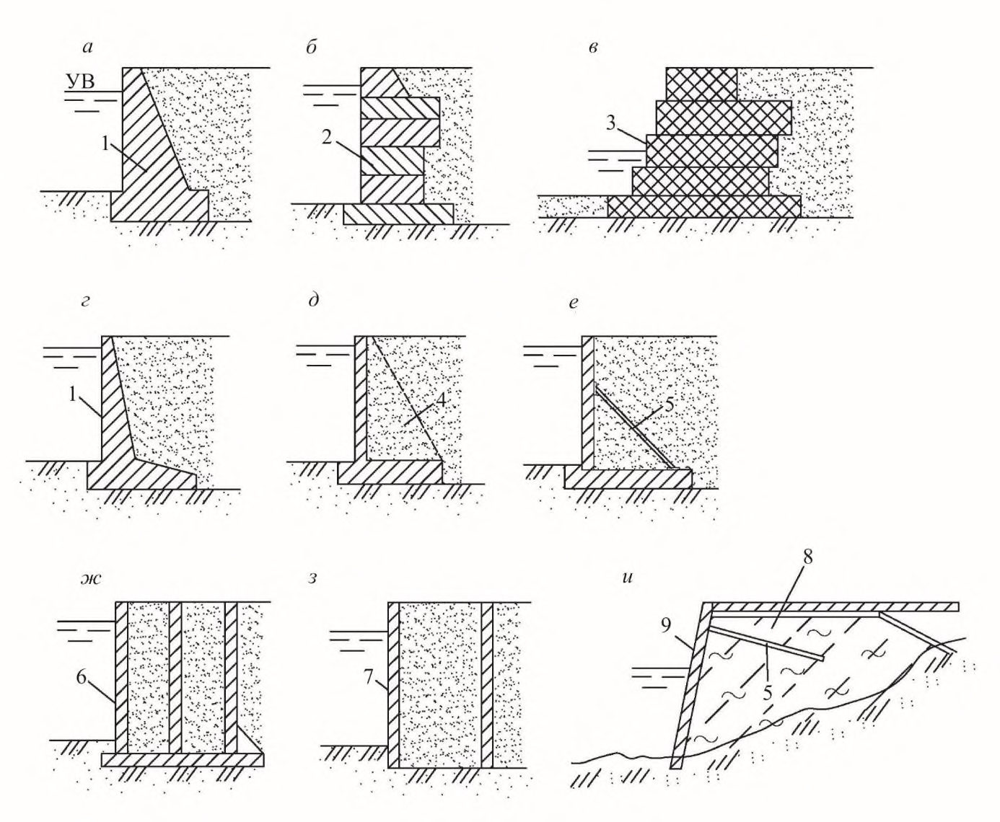
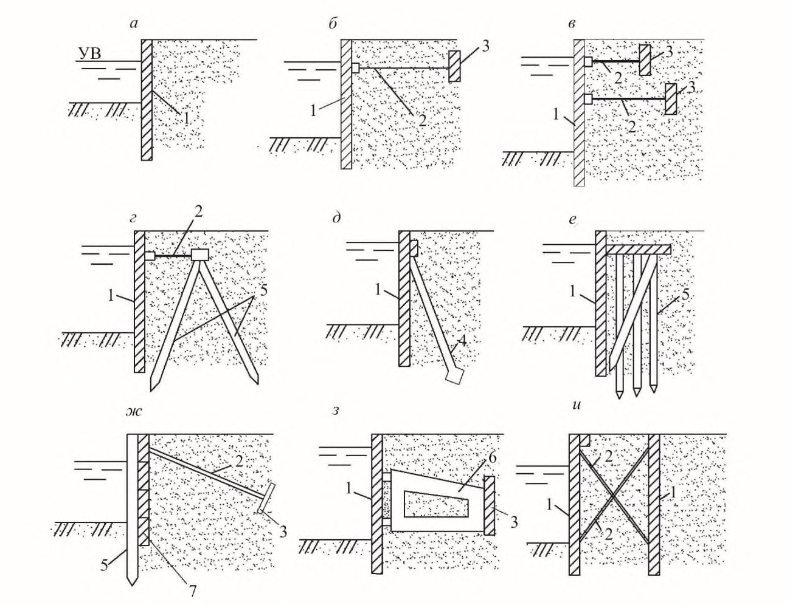
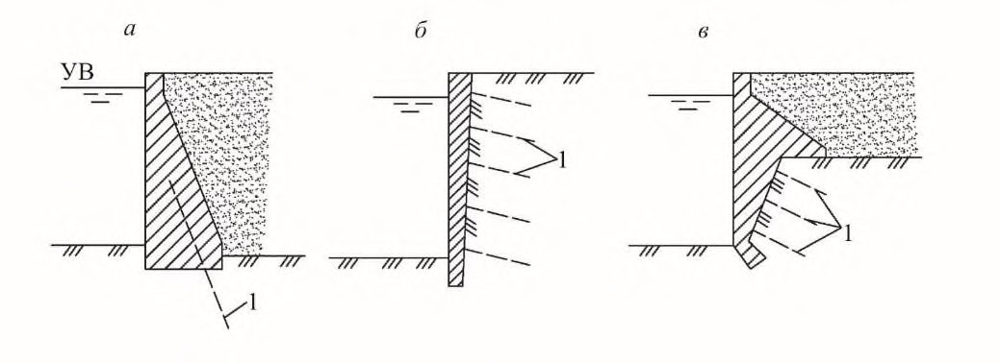
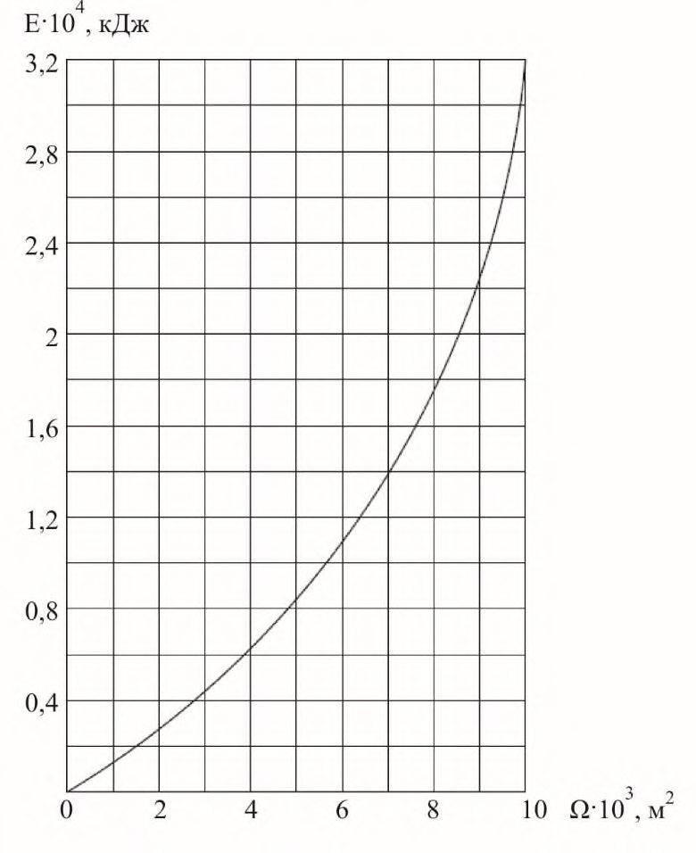
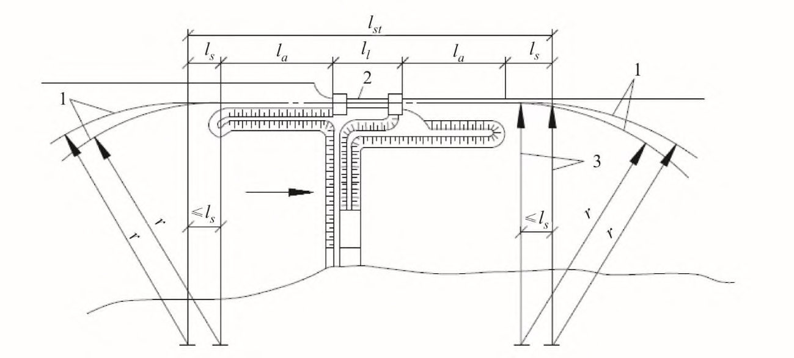
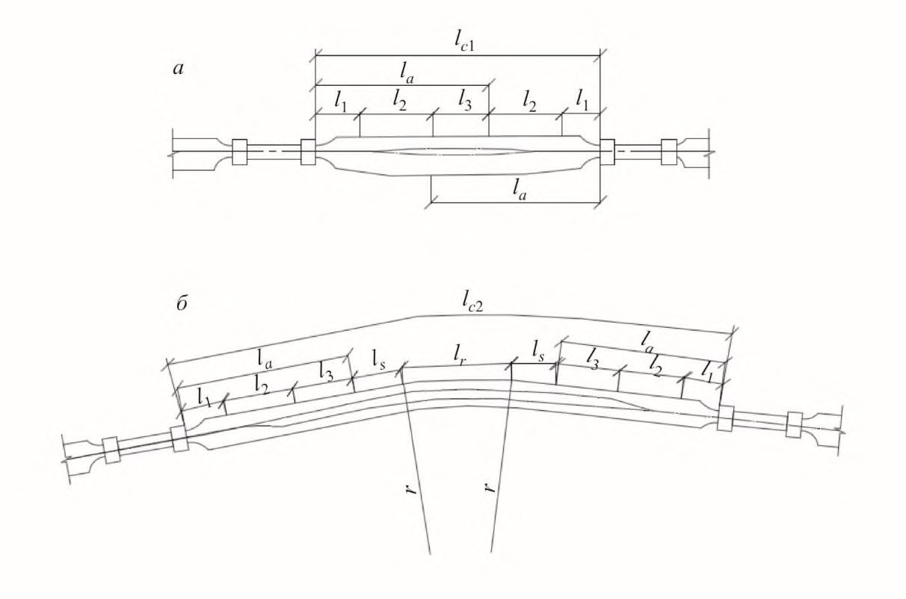
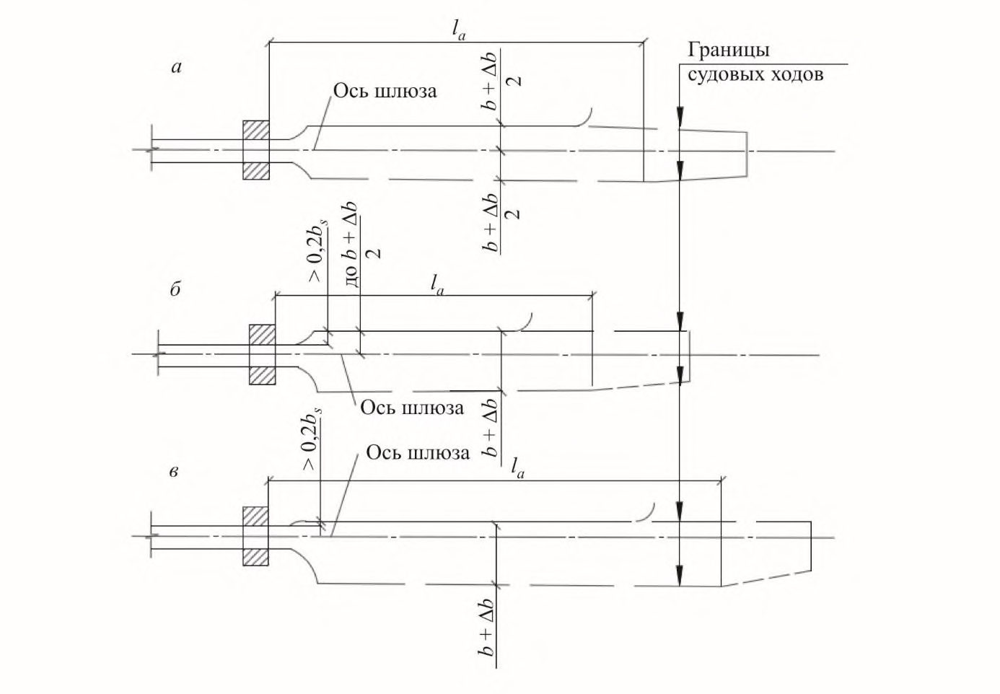
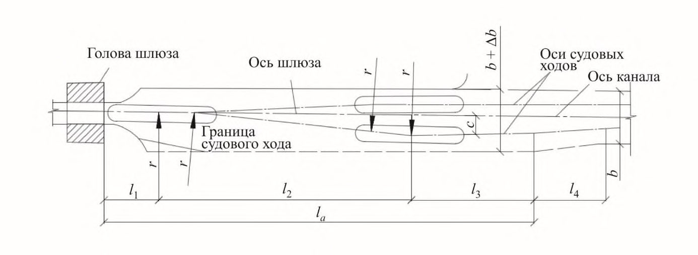
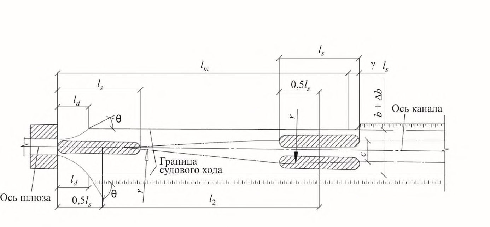

СП 101.13330.2023 «Подпорные стены, судоходные шлюзы, рыбопроп»
О документе: разработчики, утверждение, регистрация, ключевые слова
Москва - 2012
Цели и принципы стандартизации в Российской Федерации установлены Федеральным законом от 27 декабря 2002 г. № 184-ФЗ «О техническом регулировании», а правила разработки постановлением Правительства Российской Федерации от 19 ноября 2008 г. № 858 «О порядке разработки и утверждения сводов правил».
- 1 ИСПОЛНИТЕЛИ - ОАО «Институт Гидропроект», ОАО «Гипроречтранс»
- 2 ВНЕСЕН Техническим комитетом по стандартизации ТК 465 «Строительство»
- 3 ПОДГОТОВЛЕН к утверждению Департаментом архитектуры, строительства и градостроительной политики
- 4 УТВЕРЖДЕН приказом Министерства регионального развития Российской Федерации (Минрегион России) от 30 июня 2012 г. № 267 и введен в действие с 1 января 2013 г.
- 5 ЗАРЕГИСТРИРОВАН Федеральным агентством по техническому регулированию и метрологии (Росстандарт). Пересмотр СП 101.13330.2012 «СНиП 2.06.07-87 Подпорные стены, судоходные шлюзы, рыбопропускные и рыбозащитные сооружения»
Информация об изменениях к настоящему своду правил публикуется в ежегодно издаваемом информационном указателе «Национальные стандарты», а текст изменений и поправок - в ежемесячно издаваемых информационных указателях «Национальные стандарты». В случае пересмотра (замены) или отмены настоящего свода правил соответствующее уведомление будет опубликовано в ежемесячно издаваемом информационном указателе «Национальные стандарты». Соответствующая информация, уведомление и тексты размещаются также в информационной системе общего пользования - на официальном сайте разработчика (Минрегион России) в сети Интернет.
© Минрегион России, 2012
Настоящий нормативный документ не может быть полностью или частично воспроизведен, тиражирован и распространен в качестве официального издания на территории Российской Федерации без разрешения Минрегиона России
Дата введения 2013-01-01
Введение
В настоящем своде правил приведены требования, соответствующие целям технических регламентов: Федерального закона «О техническом регулировании» 1 , Федерального закона «Технический регламент о требованиях пожарной безопасности» 2 , Федерального закона «Об энергосбережении и о повышении энергетической эффективности и о внесении изменений в отдельные законодательные акты Российской Федерации» 3 и Федерального закона «Технический регламент о безопасности зданий и сооружений» 4 .
Актуализация СНиП выполнена авторским коллективом: ОАО «Институт Гидропроект» ( д-р техн. наук А.В. Иванов, Г.Г. Филиппов, Г.Ф. Ильюшенков ), ОАО «Гипроречтранс» Р.П. Степанов ( кандидаты техн. наук В.Ф. Самарин, В.Э. Даревский, В.В. Письменский ) при участии ОАО «ВНИИГ им. Б.Е. Веденеева» и ФГУП «ВНИРО» ( д-р биологических наук Ю.Б. Зайцева, доктора техн. наук А.Л. Гольдин, В.Б. Судаков, канд. техн. наук А.П. Пак, канд. биологических наук В.Н. Леман ).
1Область применения
Настоящий свод правил распространяется на проектирование вновь строящихся и реконструируемых гидротехнических сооружений: подпорных стен, судоходных шлюзов, рыбопропускных и рыбозащитных сооружений.
Проектирование сооружений, предназначенных для строительства на приморских окончаниях внутренних водных путей, следует осуществлять с учетом требований, отражающих специфические условия моря, в том числе гидрологический режим и агрессивность морской воды.
В проектах сооружений, предназначенных для строительства в сейсмических районах, в районах распространения вечномерзлых, просадочных, набухающих грунтов, в условиях образования карста, оползней и селей, должны соблюдаться дополнительные требования, предъявляемые к таким сооружениям.
2Нормативные ссылки
- В настоящем своде правил приведены ссылки на следующие нормативные документы:
- СП 14.13330.2011 «СНиП II-7-81* Строительство в сейсмических районах»
- СП 16.13330.2011 «СНиП II-23-81* Стальные конструкции»
- СП 20.13330.2011 «СНиП 2.01.07-85* Нагрузки и воздействия»
- СП 22.13330.2011 «СНиП 2.02.01-83* Основания зданий и сооружений»
- СП 23.13330.2011 «СНиП 2.02.02-85* Основания гидротехнических сооружений»
- СП 28.13330.2012 «СНиП 2.03.11-85 Защита строительных конструкций от коррозии»
- СП 31.13330.2012 «СНиП 2.04.02-84 Водоснабжение. Наружные сети и сооружения»
- СП 35.13330.2012 «СНиП 2.05.03-84* Мосты и трубы»
- СП 38.13330.2012 «СНиП 2.06.04-82* Нагрузки и воздействия на гидротехнические сооружения (волновые, ледовые и от судов)»
- СП 40.13330.2012 «СНиП 2.06.06-85 Плотины бетонные и железобетонные»
- СП 41.13330.2012 «СНиП 2.06.08-87 Бетонные и железобетонные конструкции гидротехнических сооружений»
- СП 58.13330.2012 «СНиП 33-01-2003 Гидротехнические сооружения. Основные положения»
- СП 63.13330.2012 «СНиП 52-01-2003 Бетонные и железобетонные конструкции. Основные положения»
- ГОСТ 19185-73 Гидротехника. Основные понятия. Термины и определения
- ГОСТ 26775-97 Габариты подмостовые судоходных пролетов мостов на внутренних водных путях. Нормы и технические требования
Retaining walls, navigation locks, fish passing and fish protection facilities
СП 101.13330.2012
Примечание - При пользовании настоящим сводом правил целесообразно проверить действие ссылочных стандартов и классификаторов в информационной системе общего пользования - на официальном сайте национальных органов Российской Федерации по стандартизации в сети Интернет или по ежегодно издаваемому информационному указателю «Национальные стандарты», который опубликован по состоянию на 1 января текущего года, и по соответствующим ежемесячно издаваемым информационным указателям, опубликованным в текущем году.
Если ссылочный документ заменен (изменен), то при пользовании настоящим сводом правил следует руководствоваться замененным (измененным) документом. Если ссылочный документ отменен без замены, то положение, в котором дана ссылка на него, применяется в части, не затрагивающей эту ссылку.
3Термины и определения
- 3.1абиотические факторы естественной среды обитания водных биологических ресурсов
- Компоненты и явления неживой, неорганической природы, прямо или косвенно воздействующие на условия жизнедеятельности рыб (освещенность, температура, химический состав, скорость течения воды, глубина и рельеф водных систем, техногенные объекты и др.);
- 3.2акватория порта
- Водная поверхность в установленных границах, обеспечивающая в своей судоходной части маневрирование и стоянку судов;
- 3.3безопасное место водного объекта
- Удаленный от источника опасности участок водоема, из которого отсутствует или затруднен скат молоди рыб в водозабор;
- 3.4биотические факторы среды обитания водных биологических ресурсов
- Факторы органического мира, определяющие условия существования организмов в данном водном объекте, в том числе совокупность влияний организмов на жизнь рыб (плотность населения, наличие корма и мест обитания, зимовки, нереста, миграций; хищники и др.);
- 3.5бросковая скорость
- Максимальная скорость течения, которую может преодолеть рыба в течение малого промежутка времени;
- 3.6водные пути
- Участки водоемов и водотоков, используемые для судоходства и лесосплава;
- 3.7водные биологические ресурсы
- Рыбы, водные беспозвоночные, водные млекопитающие, водоросли, другие водные животные и растения, находящиеся в состоянии естественной свободы;
- 3.8вспомогательные элементы рыбозащитного сооружения
- Второстепенные элементы рыбозащитного сооружения, предназначенные для дополнения и улучшения рыбозащитных и эксплуатационных качеств как соответствующих основных функциональных элементов, так и всего рыбозащитного сооружения в целом;
- 3.9входной потокоформирующий элемент рыбозащитного сооружения
- Основной функциональный элемент рыбозащитного сооружения, предназначенный для реоградиентной коррекции потока воды путем формирования его гидравлической структуры, обеспечивающей бесконтактную защиты молоди рыб;
- 3.10донный риф
- Искусственный риф, элементы которого размещены непосредственно на дне водоема;
- 3.11естественная среда обитания
- Природная среда, в которой объекты животного мира обитают в состоянии естественной свободы;
- 3.12защитные меры
- Меры по предотвращению попадания водных биологических ресурсов в водозаборы путем оборудования водозаборов рыбозащитными сооружениями;
- 3.13искусственный риф
- Гидротехническое сооружение, предназначенное для эколандшафтной коррекции локального рыбообитаемого участка путем проточного развития донного рельефа в водную толщу и создания, тем самым, на участке обстановки, отличающей его от окружающей ситуации в водоеме и обеспечивающей условия благоприятные для продолжительного обитания рыб и других водных биологических ресурсов на различных этапах их жизненного цикла;
- 3.14напорный фронт
- Совокупность подпорных сооружений, воспринимающих напор воды;
- 3.15насосная станция
- Комплекс гидротехнических сооружений и оборудования для подачи воды потребителю с заданным расходом и напором;
- 3.16оградительное сооружение
- Гидротехническое сооружение для защиты акватории порта или береговой полосы от волнений, наносов и льда;
- 3.17онтогенез
- Индивидуальное развитие организма, совокупность последовательных морфологических, физиологических и биохимических преобразований, претерпеваемых организмом от момента его зарождения до конца жизни;
- 3.18организационные меры
- Меры по предотвращению попадания водных биологических ресурсов в водозаборы путем пространственно-временного регулирования осуществления забора воды;
- 3.19пелагический риф
- Искусственный риф, плавучие элементы которого размещены в толще воды;
- 3.20подходной канал
- Искусственное углубление водоема или водотока по судовому ходу, имеющее знаки навигационного оборудования;
- 3.21пороговая скорость
- Минимальная скорость течения воды, при которой у рыб появляется реакция на поток;
- 3.22превентивные меры
- Меры по предотвращению попадания водных биологических ресурсов в водозаборы путем предупреждения их подхода к источнику опасности;
- 3.23привлекающая скорость
- Скорость течения воды, оптимальная для привлечения рыб в рыбонакопитель;
- 3.24протяженная цепочка пелагического рифа
- Протяженная система шарнирно соединенных последовательно друг с другом плавучих стержневых модулейориентиров;
- 3.25рабочий элемент (орган) рыбозащитного сооружения
- Обязательный функциональный элемент рыбозащитного сооружения, предназначенный для поддержания оптимальных условий ската молоди рыб в потоке и равномерного отбора воды из него в водозабор, со скоростями, не превышающими сносящие для защищаемых рыб;
- 3.26реоградиентная коррекция водоема
- Комплекс гидротехнических мероприятий, направленных на управление миграциями рыб путем выделения в водозаборной зоне локальных участков, естественная водная среда обитания рыб на которых характеризуется скоростным режимом водных течений, обеспечивающих безопасный принудительный вынос рыб на удаленные от него рыбообитаемые участки водоема;
- 3.27рыбозащитные сооружения
- Гидротехнические сооружения или устройства, предназначенные для предотвращения попадания в водозабор и гибели молоди рыб, сохранения ее здоровья и жизнеспособности, отведения в безопасное место рыбохозяйственного водоисточника;
- 3.28рыбоотводящий элемент рыбозащитного сооружения
- Основной функциональный элемент рыбозащитного сооружения, предназначенный для отведения защищенной жизнеспособной молоди рыб в безопасное место рыбохозяйственного водоема;
- 3.29рыбоподъемные сооружения (рыбоподъемники)
- Рыбопропускные сооружения, в которых перемещение рыб из нижнего в верхний бьеф осуществляется шлюзованием или транспортированием в специальных емкостях;
- 3.30рыбопропускные сооружения
- Гидротехнические сооружения для пропуска (перевода) проходных, полупроходных, а в некоторых случаях и жилых рыб из нижнего бьефа гидроузла в верхний;
- 3.31рыбоходные сооружения (рыбоходы)
- Рыбопропускные сооружения, в которых рыба самостоятельно преодолевает напор воды при движении из нижнего в верхний бьеф;
- 3.32сносящая скорость
- Скорость течения воды, при превышении которой рыб сносит потоком;
- 3.33струегенератор
- Гидромеханическое устройство, предназначенное для создания водяных струй;
- 3.34эколандшафтная коррекция водоема
- Комплекс гидротехнических мероприятий, направленных на управление миграциями рыб путем создания на его локальных участках обстановки отличной от окружающей ситуации в водоеме и более благоприятной для ориентации и безопасного обитания рыб путем обустройства естественной среды их обитания проточными искусственными элементами ландшафт.
4Обозначения
Обозначения, принятые в тексте нормативного документа, и их расшифровки приведены в приложении А и в тексте соответствующих разделов.
5Общие положения
Состав, объем и режимы натурных наблюдений должны определяться программой, включаемой в проект.
В сооружениях IV класса необходимость установки КИА должна быть обоснована.
6Подпорные стены
При соответствующем технико-экономическом обосновании подпорные стены допускается выполнять из каменной кладки, дерева (ряжевые, шпунтовые, свайные); заанкеренные в скалу (рисунок 6.3).
Выбор метода в каждом конкретном случае определяется на основании техникоэкономического сравнения вариантов и в зависимости от типа грунтов и действующих нагрузок.

а-в - массивные; г-е - уголковые; ж, з - ячеистые; и - ледовые и льдо-грунтовые;
1 - монолитный бетон; 2 - сборные элементы; 3 - габионы, заполненные камнем; 4 - контрфорсы; 5 - с анкерными тягами; 6 - массив-гигант; 7 - оболочка большого диаметра; 8 - лед и льдо-грунт; 9 - облицовка
Рисунок 6.1 -Основные виды гравитационных подпорных стен

а - безанкерные; б, в, г - заанкеренные одной или двумя тягами к плитам и сваям; д - заанкеренные к наклонным сваям; е - свайный ростверк с передним шпунтом; ж - забирчатого типа ; з - заанкеренные с жестким (в том числе скользящим) анкерным устройством; и - в виде взаимнозаанкеренных шпунтовых стен;
Рисунок 6.2 -Основные виды шпунтовых и свайных подпорных стен
- комбинированные с массивной облицовкой;

а - массивные; б - заанкеренные облицовки; в
1 - скальный анкер
Рисунок 6.3 -Подпорные стены, заанкеренные в скалу
СП 101.13330.2012
При выполнении обратной засыпки из глинистых грунтов следует принимать меры по понижению уровня и отводу грунтовых вод, по недопущению морозного пучения (укладка у тыловой грани стены слоя непучинистого грунта толщиной до 1 м и др.), а также учитывать ползучесть грунта.
При проектировании сооружений, поддерживающих оползневые склоны, для обратной засыпки у тыловой грани следует использовать крупнозернистые проницаемые грунты, обеспечивающие отвод фильтрующейся воды.
Снижение требований к плотности грунта засыпки в каждом отдельном случае должно быть обосновано. Засыпку по высоте стены следует, как правило, выполнять одинаковой плотности. При расположении на засыпке сооружений и механизмов плотность грунта засыпки следует назначать по допустимым осадкам, устанавливаемым технологическими требованиями эксплуатации этих сооружений или механизмов.
Расстояние между деформационными швами (длина секций) необходимо устанавливать по расчету на основании анализа геологии и гидрогеологии строительной площадки, учета климатических условий и конструктивного решения стены, а также методов строительного производства.
Расстояние между швами и их конструкция должны обеспечивать независимую работу отдельных секций.
В безнапорных стенах конструкция швов должна обеспечивать грунтонепроницаемость.
Конструкции уплотнений деформационных швов следует принимать в соответствии c \\serverfcc\Общая\Program Files\StroyConsultant\Temp\862.htmСП 40.133330.
В строительных швах уплотнения следует устраивать простейшей конструкции.
При расположении стен соседних секций на разных отметках при наскальном основании для исключения суффозионного выноса грунта из-под вышерасположенной секции рекомендуется устраивать поверхность основания наклонной или со ступенями ограниченной высоты.
Для скальных оснований рекомендуется устройство дренажа, а при необходимости и цементационной завесы.
Элементы подземного контура подпорных стен следует проектировать по СП 40.133330.
7Судоходные шлюзы
7.1Общие положения
Состав, объем и режимы натурных наблюдений должны определяться программой, включаемой в проект.
В сооружениях IV класса необходимость установки КИА должна быть обоснована.
- по числу камер, расположенных последовательно -на однокамерные, двухкамерные и многокамерные;
- по числу камер, расположенных параллельно - на однониточные, двухниточные и т.д.;
- по величине напора на камеру - на низконапорные с расчетным напором Нd < 10 м, средненапорные - 10 < Нd < 30 м, высоконапорные Нd > 30 м;
- по типу грунтов основания - на шлюзы на скальном и нескальном основании.
СП 101.13330.2012
Обеспечение на отдельных участках судоходных глубин путем дноуглубления или дополнительных попусков воды допускается только при надлежащем обосновании.
Сбрасываемая через судоходные шлюзы часть паводковых вод должна быть обоснована технико-экономическими расчетами и согласована федеральными органами исполнительной власти по морскому и речному транспорту и водных ресурсов.
- по типу днищ - с водопроницаемыми и со сплошными водонепроницаемыми днищами (разрезанными продольными швами или докового типа); по расположению водопроводных галерей; без водопроводных и с водопроводными галереями в днище или стенах; по высоте обратных засыпок за стенами - с полными и неполными обратными засыпками; по типу стен - откосные, полуоткосные и вертикальные.
Для камер, расположенных в нижнем бьефе, продольные постоянные швы в днищах допускается устраивать при надлежащем обосновании.
Для низконапорных шлюзов, которые сооружаются на основаниях, позволяющих погружение шпунта, допускается при надлежащем технико-экономическом обосновании стены камер возводить из шпунта или свай.
Днища камер таких шлюзов выполняются, как правило, в виде плиты, заанкеренной в основание или опертой на стены, либо при качественной скале - без днищевой плиты.
При выполнении камер шлюзов из отдельно стоящих стен следует в обязательном порядке предусматривать крепление водопроницаемого днища камеры, с учетом воздействия на него нагрузок от движителей судов и фильтрационного давления воды.
Тыловые грани стен камер шлюзов при высоте более 10 м, как правило, следует выполнять с переменным уклоном по высоте.
Смотровые колодцы на линиях закрытого дренажа следует предусматривать на расстоянии не более чем через 50 м. Не допускается совмещение сбросных линий дренажных устройств шлюза с линиями сброса поверхностных вод.
Дренаж верхних и средних камер многокамерных шлюзов следует предусматривать на отметках на 1 м выше минимальных уровней воды в соответствующей камере, но не ниже отметок дренажа нижерасположенной камеры.
СП 101.13330.2012
Время перекрытия потока аварийными и аварийно-ремонтными воротами должно быть обосновано в каждом конкретном случае.
Аварийные и аварийно-ремонтные ворота должны закрываться в текущую воду при отключении электропитания.
Рисунок 7.1 -График для определения энергоемкости предохранительного устройства в зависимости от площади зеркала камеры шлюза

Допускается не устанавливать предохранительные устройства перед воротами верхней головы при продольных скоростях течения воды в верхнем подходном канале менее 0,5 м/с.
При навале судна на заграждение предохранительного устройства, состоящего из одного каната (цепи), возникающая сила не должна превышать 0,6; 1,0; 1,1 МН (60, 100, 110 т) для судов грузоподъемностью соответственно 2000, 3000 и свыше 3000 т. Для судов типа, «река-море» расчетную силу навала следует увеличивать в 1,5 раза. Если заграждение состоит из двух или большего числа канатов (цепей), допускается соответственно увеличивать указанную силу при условии, что обеспечивается равномерное распределение силы навала между отдельными канатами.
Гашение энергии навала должно происходить при ускорении, не превышающем 1 м/с 2 .
Для предохранительных устройств, расположенных вне ворот, наибольшее перемещение судна от момента навала до полной остановки не должно превышающем половины ширины камеры.
При предохранительных устройствах, расположенных на воротах, наибольшее перемещение судна должно быть не более 1 м.
Водозаборные и водовыпускные участки водопроводных галерей должны быть доступны для осмотра и ремонта в осушенном состоянии.
Производительность насосных установок должна обеспечивать откачку камер шлюзов на сверхмагистральных и магистральных водных путях не более чем за 24 ч, а на водных путях местного значения не более чем за 48 ч.
- В отдельных случаях осушение межзатворных пространств галерей может производиться переносными насосами без откачки камеры шлюза.
На камере, длиной более 150 м, должно предусматриваться не менее двух спусков. При расположении центральных пультов управления в башнях высотой 15 м и более следует предусматривать также пассажирские лифты.
СП 101.13330.2012
Причальные тумбы следует размещать на стенах с обеих сторон камеры, на причальной линии и на направляющих сооружениях. Подвижные рымы следует предусматривать для камер шлюзов с напором более 3 м и размещать их с обеих сторон камеры. Для шлюзов с камерой шириной менее 15 м допускается устройство подвижных рымов только с одной стороны.
Неподвижные рымы устанавливаются с двух сторон камеры и на причальных сооружениях через каждые 1,5 м по высоте.
Расстояние между тумбами и рымами следует принимать не более половины длины расчетного судна, но не более 35 м.
7.2Реконструкция шлюзов
7.3Обеспечение безопасности сооружений судоходного шлюза
7.4Охрана окружающей среды
8Рыбопропускные сооружения
Для сооружений I и II классов при отсутствии перечисленных данных должны быть проведены соответствующие наблюдения и изыскания.
Таблица 8.1
| Рыбопропускные сооружения | Рыбопропускные сооружения | Рыбопропускные сооружения | |
|---|---|---|---|
| Напор на | рыбоподъемные | рыбоподъемные | |
| гидроузел, м | рыбоходные | входящие в напорный фронт гидроузла | не входящие в напорный фронт гидроузла |
| До 10 | Канал обходной; Рыбоход: лотковый прудковый лестничный | Рыбопропускной шлюз | Рыбонакопитель с рыботранспортными средствами: стационарный плавучий Атравматические орудия лова с рыботранспортными средствами. |
| От 10 до 20 | Рыбоход лестничный | Рыбоподъемник: гидравлический механический | Рыбонакопитель с рыботранспортными средствами: стационарный плавучий Атравматические орудия лова с рыботранспортными средствами. |
| Более 20 | - | Рыбоподъемник: гидравлический механический | Рыбонакопитель с рыботранспортными средствами: стационарный плавучий Атравматические орудия лова с рыботранспортными средствами. |
СП 101.13330.2012
Таблица 8.2
| Вид рыб | Характерные для рыб скорости потока, м/с | Характерные для рыб скорости потока, м/с | Характерные для рыб скорости потока, м/с | Характерные для рыб скорости потока, м/с |
|---|---|---|---|---|
| пороговая v w | привлекающая v at | сносящая v p , | бросковая v th | |
| Проходные: | ||||
| осетровые | 0,15-0,2 | 0,7-1,2 | 0,9-1,4 | - |
| лососевые | 0,2-0,25 | 0,9-1,4 | 1,1-1,6 | 1,5-2 |
| Полупроходные: | ||||
| лещ, судак, сазан, вобла и др.: | 0,15-0,2 | 0,5-0,8 | 0,9-1,2 | - |
Длину шлейфа привлекающих скоростей l sh и его полуширину в конечном створе bsh следует устанавливать по формулам:
где br - полуширина рыбонакопителя; v at - привлекающая скорость; vmt - средняя скорость спутного потока от водосбросных сооружений; vw - пороговая скорость.
- из чередующихся горизонтальных и наклонных участков;
- из горизонтальных участков -бассейнов, расположенных ступенчато и разделенных стенками с вплывными отверстиями.
Ширина тракта рыбохода должна быть 2-10 м, глубина воды - от 1-2 м, уклон дна - от 0 до 0,125. Длина бассейна лестничного рыбохода должна быть не менее ее ширины.
Перепад уровней воды между бассейнами следует устанавливать из условия, чтобы скорости во вплывных отверстиях не превышали бросковых скоростей для рыб.
При общей высоте подъема рыбы более 5 м рыбоход устраивается в виде отдельных маршей с подъемом 2-3 м, разделенных бассейнами для отдыха рыб.
Минимальные параметры рыбонакопителей, приведены ниже.
При обеспечении непрерывной подачи расхода воды в рыбонакопитель для привлечения рыб его следует принимать однониточным. Конструкция рыбонакопителя должна обеспечивать условия равномерного распределения скоростей внутри лотка по его длине и сечению при отношении максимальной скорости к средней не более 1,2.
Ширина рабочей камеры должна равняться ширине рыбонакопителя.
Длину рабочей камеры следует устанавливать: для рыбоподъемников - по формуле
где n - расчетная численность рыб, заходящих в рыбопропускное сооружение за один цикл работы, шт.;
- V - объем воды, необходимый для одной особи рыб, принимаемый для осетровых равным 0,17 м³ на одну особь, для остальных видов рыб 0,02 м³ на одну особь;
- S - площадь живого сечения потока в рабочей камере при минимальной глубине в ней, м² ; для рыбопропускных шлюзов - по формуле
где а max - максимальная величина открытия водопропускного отверстия блока питания.
Конструкция выходного лотка должна обеспечивать непрерывную или периодическую (в каждый цикл пропуска рыбы) проточность в направлении от выходного отверстия к рабочей камере со средними скоростями не менее пороговой для рыб максимальной длины и не более половины сносящей - для рыб минимальной длины.
Следует избегать совмещения выходного лотка с трактом подачи расходов к блоку питания.
Площадь открытия водопропускных отверстий блока питания А надлежит устанавливать по формуле
где Н - напор на затворе, м; т - коэффициент расхода блока питания.
На предварительных стадиях проектирования коэффициент расхода следует определять в зависимости от конструкции блока питания по таблице 8.3.
Таблица 8.3
| Конструкция блока питания | Параметр конструкции блока питания | Коэффициент расхода |
|---|---|---|
| Плоский затвор с клинкетами, перекрываемыми общей шторкой | При сквозности рыбоудерживающей решетки: 0,55 0,65 | 0,59 0,7 |
| Плоский затвор с клинкетами, перекрываемыми отдельными клапанами | При относительном открытии клинкетного отверстия: 0,1 0,4 1 | 0,58 0,62 0,4 |
| Водослив практического профиля со щитовым затвором на гребне | При угле скоса щитового затвора 30 - 45° | 0,83 0,6 0,3 pr H a H H + - , где H - см. формулу (8.5); H рr - профилирующий напор, м; а - высота открытия затвора, м |
Затворы рыбопропускных сооружений должны иметь двухстороннюю обшивку, предотвращающую попадание рыбы в межригельное пространство затворов.
Пазы, ниши и технологические углубления в стенках и днище рыбопропускных сооружений необходимо перекрывать рыбозащитными шторками и решетками.
СП 101.13330.2012
9Рыбозащитные сооружения
Таблица 9.1
| Рыбозащитное сооружение | Рыбозащитное сооружение | Рыбозащитное сооружение | Рыбозащитное сооружение | Рыбозащитное сооружение | Рыбозащитное сооружение | Рыбозащитное сооружение | Рыбозащитное сооружение | Рыбозащитное сооружение | Рыбозащитное сооружение |
|---|---|---|---|---|---|---|---|---|---|
| вход | вход | действие | действие | действие | выход | выход | |||
| Потокоформирующий элемент | Потокоформирующий элемент | Рабочий орган | Рабочий орган | Рабочий орган | Рыбоотводящий элемент | Рыбоотводящий элемент | Вспомогательный элемент | Вспомогательный элемент | Вспомогательный элемент |
| Прямоточный | Закручивающий | Отгораживающий | Заградительный | Бесконтактный | Самотечный | Принудительный | Ориентирующий | Привлекающий | Отпугивающий |
скорость (продольная составляющая скорости) транзитного течения воды vtr вдоль защитно-водоприемной поверхности рабочего органа должна не менее чем в 2,5 раза превышать сносящую скорость vp для рыб наибольшего защищаемого размера
скорость (поперечная составляющая скорости) перетекания рабочего потока в водозабор vwf через защитно-водоприемную поверхность рабочего органа не должна превышать сносящую скорость vp для рыб наименьшего защищаемого размера
СП 101.13330.2012
скорость поступления потока в оголовок рыбоотвода v t должна не менее чем 1,4 раза превышать скорость спутного течения в водозабор vws
скорость течения потока в рыбоотводе, направленном в безопасное место рыбообитаемого водоема следует принимать не менее сносящей скорости для защищаемых рыб
скорость течения водяной струи v s , предназначенной для создания течения в рыбоотводе, формирования транзитного течения или гидравлической завесы не должна более чем на 10 м/с превышать скорость течения в окружающей струю водной среде v w о
10Основные расчетные положения
Для сооружений I и II классов характеристики фильтрационного потока (уровни, давления, градиенты напора, расходы), как правило, следует определять, рассматривая пространственную задачу. Допускается рассматривать плоскую задачу для сооружений III и IV классов и для средней части сооружений I и II классов, когда их протяженность превышает 2,5 высоты.
Фильтрационное давление на подошву сооружений I и II классов, возводимых на скальном основании, и для сооружений III и IV классов, независимо от вида основания, допускается определять исходя из линейного закона его распределения на отдельных участках, учитывая при этом разгружающее действие противофильтрационных устройств и дренажей, если таковые предусматриваются проектом.
Расчет системы сооружение-основание допускается производить приближенными методами, в которых боковое давление грунта определяют как сумму основного и дополнительного (реактивного) давлений, действующих на расчетную плоскость сооружения или засыпки, в соответствии с 10.5 - 10.7 и приложением М.
Примечание - За расчетную плоскость принимается поверхность сооружения на контакте с грунтом или условная плоскость внутри грунта (при наличии неплоской поверхности или разгрузочных элементов).
СП 101.13330.2012
Дополнительное (реактивное) давление грунта учитывается при расчете прочности и деформации конструкций, а также при расчете железобетонных конструкций по образованию и раскрытию трещин; в расчетах устойчивости сооружений дополнительное давление грунта не учитывается.
Ординаты интенсивности дополнительного (реактивного) давления грунта в сумме с ординатами интенсивности основного давления грунта не должны превышать интенсивности пассивного давления.
При определении дополнительного (реактивного) давления следует учитывать влияние расположенных за засыпкой на расстоянии, меньшем ее высоты, других сооружений или скального массива.
Если перечисленные параметры не изменяются по длине сооружения на протяжении более трех его высот, расчеты допускается производить на единицу длины сооружения.
При расчете устойчивости голов судоходных шлюзов или других аналогичных сооружений, имеющих отсыпку по боковым поверхностям, в силы сопротивления следует включать силы трения грунта по боковым поверхностям.
При расчетах шпунтовых стен следует учитывать возможность разжижения грунта при динамических воздействиях.
При проверке устойчивости ячеистых конструкций на плоский сдвиг вес грунта, заполняющего ячейки, учитывается полностью.
При проверке устойчивости этих конструкций на опрокидывание вес грунта в ячейке, передающийся непосредственно на основание, не учитывается.
Кроме обычной проверки устойчивости на сдвиг и опрокидывание ячеистые конструкции из шпунта следует проверять на сдвиг по вертикальной плоскости внутри ячейки и на разрыв замков шпунтин.
c
= 1;
Ft и Fr - соответственно сумма сил, отрывающих конструкцию от основания и удерживающих ее.
Прочность контакта сооружения с основанием на отрыв учитывается только при анкеровке конструкции в скальном основании. Конструкция, сечения и заглубление анкеров должны проверяться расчетом прочности, устойчивости и деформаций.
- а) собственный вес сооружения, включая вес постоянного технологического оборудования (затворы, подъемные механизмы и пр.), местоположение которого на сооружении не меняется в процессе эксплуатации:
- б) вес грунта, постоянно расположенного на сооружении;
- в) боковое давление грунта, возникающее от действия собственного веса грунта, постоянных и длительных временных нагрузок, действующих на поверхности грунта;
- г) силовое воздействие воды, в том числе фильтрационное при установившихся расчетных уровнях со стороны лицевой и тыловой граней подпорной стены и стен шлюзов, при нормальной работе противофильтрационных и дренажных устройств (для причальных сооружений и набережных, не входящих в состав сооружений напорного фронта, данная нагрузка относится к временной длительной);
- д) предварительное напряжение конструкции или ее анкерных устройств; временные длительные нагрузки и воздействия
- е) силовое воздействие воды на лицевую грань подпорной стены, стены камеры шлюза при наивысшем уровне воды основного расчетного случая или уровне наполненной камеры шлюза;
- ж) температурные воздействия, соответствующие изменениям среднемесячных температур окружающей среды для среднего по температурным условиям года;
где Mt , Mr - суммы моментов сил, стремящихся опрокинуть и удержать сооружение относительно центра тяжести прямоугольной эпюры сжимающих напряжении в бетоне интенсивностью Rbt , при этом моменты вычисляются для каждого силового воздействия в отдельности;
lc - коэффициент сочетания нагрузок;
n - коэффициент надежности по назначению сооружения;
с коэффициент условий работы, принимаемый равным 1.
Прочность контакта сооружения с основанием на отрыв учитывается только при анкеровке конструкции в скальном основании. Конструкция, сечения и заглубление анкеров должны проверяться расчетом прочности, устойчивости и деформаций.
СП 101.13330.2012
- з) дополнительное (реактивное) боковое давление грунта на подпорные стены и стены камер шлюзов, возникающее от действия длительных временных нагрузок (дополнительное давление воды на лицевую грань, температурные воздействия, навал стены на грунт засыпки);
кратковременные нагрузки и воздействия
- и) нагрузки от транспортных воздействий, строительных и перегрузочных механизмов и складируемых грузов (в зависимости от эксплуатационных условий данные нагрузки могут быть отнесены к временным длительным);
- к) нагрузки от судов (навал, натяжение швартовов) при расчетных скоростях подхода судов;
- л) нагрузки от волн, принимаемые в соответствии с СП 38.13330 при средней многолетней скорости ветра;
- м) ледовые нагрузки, принимаемые в соответствии с СП 38.13330 для средней многолетней толщины льда;
- н) гидродинамические, пульсационные нагрузки воды.
- а) сейсмические воздействия;
- б) силовое воздействие воды, в том числе фильтрационное при форсированном уровне воды в водоеме (поверочный расчетный случай), соответствующем уровне нижнего бьефа, в случае нарушения нормальной работы противофильтрационных и дренажных устройств (до 50 % полной эффективности) (взамен 10.15 г ) СП 20.13330;
- в) температурные воздействия, определяемые для года с максимальной амплитудой колебаний среднемесячных температур, а также для года с максимально низкой среднемесячной температурой (взамен 10.15 ж );
- г) волновое воздействие, определяемое в соответствии с СП 38.13330 при максимальной расчетной скорости ветра обеспеченностью 2 % - для сооружений I и II классов, и 4 % - для сооружений III и IV классов (взамен 10.15 л );
- д) ледовые нагрузки, определяемые при максимальной многолетней толщине или прорыве заторов в зимних попусках воды в нижнем бьефе (взамен 10.15 м );
- е) воздействия, вызванные взрывами вблизи проектируемого сооружения.
При отсутствии экспериментального обоснования прочностных характеристик грунтов допускается для песчаных грунтов засыпок подпорных стен III и IV классов, а также для предварительных расчетов стен I и II классов использовать их нормативные значения, приведенные в СП 22.13330 с уменьшением их значений на коэффициент условий работы c = 0,9 (грунт засыпки). В этом случае коэффициент надежности по нагрузке следует принимать f = 1,2 (0,8).
АПриложение А. (справочное)
Основные буквенные обозначения
Характеристики грунтов
- d плотность сухого грунта;
- En нормативное значение модуля деформации;
- -коэффициент поперечной деформации;
- K коэффициент упругого отпора;
- n нормативное значение угла внутреннего трения;
- cn нормативное значение удельного сцепления грунта;
- -расчетное значение угла внутреннего трения;
- s -угол трения грунта по расчетной плоскости;
- c -расчетное значение удельного сцепления;
- Rcs сопротивление скального основания смятию.
Нагрузки и воздействия, усилия от них
- Нd расчетный напор воды;
- Ft и Fr соответственно сумма сил, отрывающих конструкцию от основания и удерживаюших ее;
- Mt и Mr суммы моментов сил, стремящихся опрокинуть и удержать сооружение;
- Fl продольная составляющая гидродинамических сил;
- Fq поперечная горизонтальная сила от навала судна;
- Qtot поперечная сила от суммарного воздействия ветра и течения;
- Eah и Eav расчетные значения горизонтальных и вертикальных составляющих активного давления грунта с верховой стороны сооружения;
- Eph и Epv расчетные значения горизонтальных и вертикальных составляющих пассивного давления грунта с низовой стороны сооружения;
- lc -коэффициент сочетания нагрузок;
- n коэффициент надежности по назначению сооружения;
- с -коэффициент условий работы;
- f -коэффициент надежности по нагрузкам.
Гидродинамические характеристики потока
- vf скорость течения подходного потока;
- vmt средняя скорость спутного потока от водосбросных сооружений;
- vws скорость спутного потока в водозабор;
- vs скорость течения водяной струи;
- vw о -скорость течения в водной среде;
- vwf скорость перетекания рабочего потока в водозабор;
- vt скорость течения в оголовке рыбоотводящего тракта;
- vw пороговая скорость;
- vat привлекающая скорость;
- vp сносящая скорость;
- vth бросковая скорость;
- vtr -скорость (продольная составляющая скорости) транзитного течения воды;
- Q расход водозабора.
Геометрические характеристики
- S площадь живого сечения потока;
- A площадь открытия водосбросных отверстий;
- bri ширина водосборной полосы одной секции экрана;
- а max -максимальная величина открытия водопропускного отверстия блока питания;
- l sh -длина шлейфа;
- bsh полуширина шлейфа;
- br полуширина рыбонакопителя;
- bc ширина камеры шлюза;
- bc , ef -полезная ширина камеры;
- bs ширина расчетного судна;
- l с -длина камеры шлюза;
- l fl длина рабочей камеры для рыбоподъемников;
- l fp -длина рабочей камеры для рыбопропускных шлюзов;
- l f -длина тела рыб;
- l c , ef -полезная длина камеры шлюза;
- l длина пути входа (выхода) расчетного судна;
- l s -длина расчетного судна;
- l 1,2,3 -длины участков подходного канала к шлюзу;
- l a длина верхнего (нижнего) участка подхода;
- l st -длина прямолинейного участка судоходной трассы;
- l r -длина криволинейной вставки;
- lm длина причальной линии;
- hl глубина на порогах шлюза;
- s статическая осадка расчетного судна в полном грузу;
- hbr высота подмостовых габаритов в шлюзах;
- bbr ширина подмостовых габаритов;
- l l -длина шлюза, включая головы;
- l c1 -прямолинейный участок между двумя шлюзами;
- b ширина судового хода подходных участков;
- bs 1, bs 2, bs 3 -ширины расходящихся расчетных судов;
- r радиус траектории центра тяжести судна (радиус поворота судна);
- c смещение оси судового хода в канале относительно оси шлюза при выходе или входе судна;
- am смещение лицевой грани причала от оси шлюза;
- D водоизмещение расчетного судна;
- lm длина причальной линии шлюзов;
- l s ,max -длина наибольшего одиночного или входящего в судовой состав судна;
- l расчетная длина стены камеры;
- d толщина стены в рассматриваемом сечении;
- hp расстояние от точки приложения силы навала до рассматриваемого сечения;
- py вертикальное давление в грунте у расчетной плоскости на глубине y ; ah и ahc коэффициенты горизонтальной составляющей активного давления грунта.
БПриложение Б. (обязательное)
Определение класса, категории водного пути и класса сооружений судоходных шлюзов
- Б.1 Внутренние водные пути в зависимости от их характеристик и использования транспортным и техническим флотом подразделяются на семь классов и три категории.
- Б.2 Класс и категория водного пути (участка) в зависимости от гарантированной и средненавигационной глубин судового хода на перспективу назначаются по ГОСТ 26775 и согласовываются с федеральным органом исполнительной власти по морскому и речному транспорту. сверхмагистральными являются пути 1 и 2 классов,
Б.3 Категории водного пути: магистральными - 3 и 4 классов, местного значения - 5, 6 и 7 классов.
- Б.4 Класс основных гидротехнических сооружений судоходных шлюзов в зависимости от их высоты и типа грунтов основания, социально-экономической ответственности и условий эксплуатации, от последствий возможных гидродинамических аварий назначается по СП 58.13330.
ВПриложение В. (рекомендуемое)
Основные положения по определению грузооборота, судооборота и пропускной способности шлюзов
- В.1 Данные по типам расчетных судов, грузо- и судообороту (навигационному и среднесуточному в наиболее напряженный период навигации) в створе гидроузла, определяемые на расчетный перспективный срок, следует устанавливать на основании схемы развития водного транспорта бассейна, а при отсутствии ее на расчетный перспективный срок - на основании экономических исследований.
За расчетный перспективный срок принимается: для шлюзов на сверхмагистральных и магистральных водных путях - 10 лет после начала постоянной эксплуатации; для шлюзов на водных путях местного значения - 5 лет.
Расчетное судно (составы, плот) выбирается по водоизмещению, длине, ширине, осадке, надводному возвышению привального бруса, надводному габариту согласно сетке типов судов, утвержденной федеральным органом исполнительной власти по морскому и речному транспорту.
- В.2 Навигационный судооборот определяется по направлениям вверх и вниз отдельно груженых и порожних судов различных типов: самоходных и несамоходных, пассажирских и грузопассажирских, плотоводов, технического флота, шлюзуемых секций плотов и др.
В.3 Среднесуточный судооборот в наиболее напряженный период навигации по каждому виду перевозок определяется как отношение навигационного судооборота к длительности навигации в сутках, умноженное на коэффициент неравномерности подхода судов и плотов к шлюзам, принимаемый по данным анализа проектируемого судооборота. При отсутствии таких данных коэффициент неравномерности допускается принимать: для судов 1,3; плотов 1,7.
Длительность навигации (сут) устанавливается с учетом ее продления при отрицательных температурах воздуха органами, регулирующими судоходство на внутренних водных путях.
- В.4 Общее число шлюзований в сутки следует определять как сумму шлюзований транспортного флота (включая плоты) с увеличением на две пары шлюзований для сверхмагистральных и магистральных водных путей и одну пару - для водных путей местного значения для учета пропуска технического флота.
- В.5 Пропуск судна производится через шлюз при одностороннем или двустороннем шлюзовании.
Время цикла одностороннего шлюзования определяется продолжительностью следующих операций: ввод судов в шлюз, учалка судов, закрытие ворот, наполнение или опорожнение камеры, открытие ворот, вывод судов из шлюза, закрытие ворот, опорожнение или наполнение камеры, открытие ворот.
Время цикла двустороннего шлюзования определяется продолжительностью следующих операций: ввод судов в шлюз, учалка судов, закрытие ворот, наполнение или опорожнение камеры, открытие ворот, вывод судов из шлюза, ввод судов в шлюз, учалка судов, закрытие ворот, наполнение или опорожнение камеры, открытие ворот, вывод судов из шлюза.
Для многокамерного шлюза во всех случаях добавляется операция по переводу судов из одной камеры шлюза в другую.
СП 101.13330.2012
В.6 Время на учалку судна в шлюзе для всех судов, за исключением скоростных, следует принимать 2 мин, для скоростных судов - 0,5 мин.
В.7 Время наполнения и опорожнения камер шлюза следует определять гидравлическими расчетами. Для предварительных расчетов время наполнения и опорожнения камеры шлюза, t мин, допускается определять по формуле
где - коэффициент, принимаемый для шлюзов с головной системой питания равным 0,27, с распределительной системой питания - 0,19;
Hd - расчетный напор на камеру, м; bc , ef - полезная ширина камеры, м; l c , ef - полезная длина камеры, м.
В.8 Время открытия и закрытия ворот шлюза следует определять на основании конструктивных разработок в зависимости от типа ворот и механизмов, размеров перекрываемого отверстия.
При предварительных расчетах продолжительности открытия и закрытия ворот допускается принимать: для плоских ворот - 2 мин при высоте перекрываемого отверстия 5 h h м; 2,5 мин при 5 10 h h и 3 мин при 10 h h м; для двустворчатых ворот - 2 мин при ширине камеры 18 c b м; 2,5 мин при 18 30 c b м и 3 мин при 30 c b м.
В.9 Время ввода судов в шлюз, вывода из него и перевода из камеры в камеру определяется в зависимости от скорости и длины пути их движения.
Скорость движения необходимо определять расчетом из условия обеспечения безопасности входа, выхода и стоянки судов у причала.
Для предварительных расчетов средние скорости движения судов на внутренних водных путях в шлюзе и на подходах к нему принимаются по таблице В.1.
Таблица В.1
| Средняя скорость движения, м/с | Средняя скорость движения, м/с | Средняя скорость движения, м/с | |
|---|---|---|---|
| Шлюзуемый объект | вход | выход | переход из одной камеры в другую |
| Скоростные суда | 2 | 3 | 1,5 |
| Самоходные суда | 1 | 1,4 | 0,75 |
| Толкаемые составы | 0,9 | 1,2 | 0,75 |
| Буксируемые составы | 0,7 | 1 | 0,6 |
| Плоты | 0,6 | 0,6 | 0,5 |
В.10 Длина пути движения судна при входе в шлюз и выходе из него определяется положением его на подходах и в камере.
Начальное расчетное положение на подходе при одностороннем движении судов в каждом из направлений определяется допустимой величиной гидродинамической силы при наполнении (опорожнении) камеры из подходного канала, при боковом заборе и выпуске воды - возможностью открытия ворот перед ним. При двустороннем движении судов начальное положение судна определяется возможностью расхождения со встречным судном. Во всех случаях расстояние между судном и воротами не должно быть менее 5 м.
Положение последующих судов при выходе определяется: при одностороннем движении - возможностью закрытия ворот за ними, а при двустороннем движении расхождением со встречным судном, ожидающим шлюзования.
При одновременном шлюзовании нескольких судов длину пути движения следует определять по судну, которое входит в камеру шлюза и выходит из нее последним.
При переходе из камеры в камеру длина пути движения принимается равной длине камеры и средней головы шлюза.
В.11 При предварительных расчетах длину пути входа (выхода) расчетного судна, ожидающего шлюзования у причала, допускается принимать равной: при одностороннем движении судов в каждом из направлений
при двустороннем движении судов
где l c,ef - см. формулу (В.1);
1 - коэффициент, принимаемый равным: при входе 0,4, при выходе 0,1;
2- коэффициент, принимаемый равным 0,4; l
2- длина участка, определяемая в соответствии с приложением Е.
В.12 Грузои судопропускная способность шлюзов определяется числом шлюзований расчетных судов исходя из полной загрузки шлюза в наиболее напряженные сутки (при работе шлюза, в среднем в течение 23 ч) при принятых типах расчетных судов и структуре перевозок на установленные расчетные сроки. При определении пропускной способности однониточных шлюзов число шлюзований для всех типов судов следует принимать 25 % при одностороннем шлюзовании и 75 % при двустороннем шлюзовании; для плотов принимается только одностороннее шлюзование.
В.13 Число ниток шлюзов определяется исходя из необходимой пропускной способности их на расчетные сроки.
Как правило, следует предусматривать возможность строительства в будущем дополнительной нитки шлюза без перерыва в работе эксплуатируемых судоходных сооружений.
При надлежащем технико-экономическом обосновании допускается принимать одну из ниток шлюзов с меньшими габаритами камер для пропуска скоростных или малогабаритных судов.
ГПриложение Г. (рекомендуемое)
Определение габаритов шлюзов
Г.1 Основные габариты шлюзов (полезная длина и ширина камеры, а также глубина на порогах) должны отвечать характеристикам расчетных судов.
Основные габариты шлюзов, расположенных на одном водном пути, должны приниматься одинаковыми. Отступление от этого требования должно согласовываться с органами, регулирующими судоходство на внутренних водных путях.
Г.2 Полезная длина камер l c,ef определяется по формуле
где: 1 n s l -сумма длин расчетных судов, шлюзуемых одновременно и устанавливаемых в камере шлюза в кильватер; запас по длине камеры в каждую сторону и между судами, устанавливаемыми в камере шлюза в кильватер, определяемый по формуле
Полезная ширина камеры шлюза bc,ef определяется по формуле
где 1 1 n s b - сумма ширин одновременно шлюзуемых (рядом стоящих) судов; s b - запас по ширине в каждую сторону и между рядом стоящими в камере судами; n 1 - число одновременно шлюзуемых (рядом стоящих) судов.
Запасы по ширине с каждой стороны камеры и между судами s b должны быть не менее: при ширине судна до 10 м - 0,2 м; до 18 - 0,4 м; до 30 - 0,75 м; свыше 30 - 1 м. В шлюзах, предназначенных для пропуска морских судов, эти запасы должны быть не менее 1,5 м при движении судна своим ходом; при заводке буксировщиком - запас с одной стороны увеличивается на ширину буксировщика.
Глубина на порогах шлюза hl , отсчитываемая от расчетного наинизшего судоходного уровня, должна приниматься
где s - статическая осадка расчетного судна в полном грузу.
Для шлюзов полезные длину и ширину камеры, глубину на порогах следует округлять в сторону увеличения до ближайших размеров, приведенных в таблице Г.1.
Таблица Г.1
| Отношение полезной ширины камеры шлюза к полезной длине, м | 37 ----- 400 | 37 ----- 300 | 30 ----- 300 | 20 ---- 300 | 20 ---- 150 | 18 --- 150 | 15 ---- 150 | 15 ---- 100 | 12 --- 100 | 8 --- 50 | 6 --- 35 |
|---|---|---|---|---|---|---|---|---|---|---|---|
| Глубина на порогах шлюза, м | 6 | 6 | 6 | 5,5 | 5,5 | 5,5 | 4 | 3 | 3 | 3 | 2 |
| Глубина на порогах шлюза, м | 5,5 | 5,5 | 5,5 | 5 | 5 | 5 | 3,5 | 2,5 | 2,5 | 2,5 | 1,5 |
| Глубина на порогах шлюза, м | 5 | 5 | 5 | 4,5 | 4,5 | 4,5 | 3 | 2 | 2 | 2 | 1 |
| Глубина на порогах шлюза, м | - | - | - | 4 | 4 | 4 | - | - | 1,5 | 1,5 | - |
Примечание - Другие габариты шлюзов допускается принимать только при согласовании с федеральным органом исполнительной власти по морскому и речному транспорту.
Г.3 Границей полезной длины камеры шлюза с верховой ее стороны следует считать: при распределительной системе питания - низовую грань стенки падения или шкафной части головы, или низовую грань других частей конструкции верхней головы наиболее выступающих в сторону камеры; при головной системе питания - конец успокоительного участка.
Границей полезной длины камеры шлюза с низовой ее стороны следует считать линию, отстоящую на расстояние не менее 3 м в сторону камеры от верховой грани шкафной части ворот, а также линию предохранительного устройства, располагаемого перед воротами нижней головы.
В случае размещения предохранительных устройств в камере с двух сторон полезная длина камеры ограничивается этими устройствами.
Г.4 В шлюзах, предназначенных для эксплуатации при отрицательных температурах воздуха, в случаях отсутствия в камере устройств, исключающих образование льда на стенах, запасы по ширине между расчетными судами для этого периода и стенами камер необходимо определять с учетом образования на стенах ледяных вальцов. При отсутствии натурных данных ширина ледяных вальцов с каждой стороны может быть принята не менее утроенной толщины ледяного покрова, образующегося на водотоке в многолетнем разрезе к моменту завершения продленной навигации.
Г.5 Высота подмостовых габаритов в шлюзах hbr , надводные габариты подъемных ворот, разводных и подъемных мостов должны приниматься в соответствии с ГОСТ 26775 от расчетного наивысшего судоходного уровня воды.
Ширина подмостовых габаритов b br принимается: при вертикальных стенах - не менее полезной ширины камеры шлюза, при наклонных стенах - не менее ширины камеры на отметке этого уровня.
Г.6 При проектировании пересечений судоходных шлюзов и подходных каналов высоковольтными воздушными линиями необходимо учитывать [2].
Расстояние от нижних проводов до максимальных надводных габаритов судов при расчетном наивысшем судоходном уровне воды и высшей температуре воздуха должно составлять не менее 2-4 м в зависимости от напряжения в линии.
Г.7 При проектировании пересечений шлюзов и подходных каналов телеграфными и телефонными воздушными линиями расстояние от нижних проводов до максимальных надводных габаритов судов при расчетном наивысшем судоходном уровне воды и высшей температуре воздуха должно составлять не менее 1 м.
Кроме того, расстояния по Г.6 и Г.7 не должны быть менее высоты подмостового габарита для соответствующего класса водного пути.
СП 101.13330.2012
Г.8 Верх стен шлюзов, направляющих и причальных сооружений или их парапетов, способных воспринимать навал судов, при расчетном наивысшем судоходном уровне воды не должен быть ниже верхнего привального бруса наибольшего расчетного судна при полной загрузке и выше нижнего привального бруса расчетного судна в порожнем состоянии, а для судов на воздушной подушке и подводных крыльях - при движении их на подушке или крыльях.
Возвышение площадок, расположенных вдоль стен камер шлюзов, причальных и направляющих сооружений над расчетным наивысшим судоходным уровнем воды должно быть для шлюзов на сверхмагистральных водных путях не менее 2 м, магистральных - не менее 1 м; на водных путях местного значения - не менее 0,5 м. В многокамерных шлюзах, имеющих боковые водосливы, это возвышение должно отсчитываться от наивысшего уровня воды в камере, который устанавливается при работе водослива. Возвышение сооружений и частей шлюза, входящих в напорный фронт гидроузла, должно соответствовать требованиям, предъявляемым к сооружениям напорного фронта.
Г.9 Ширина площадок, указанных в Г.8, должна назначаться из условий размещения на них различных коммуникаций и обеспечения одностороннего проезда автотранспорта, но не менее 4,5 м.
Допускается уменьшение ширины площадок до 2 м для шлюзов на сверхмагистральных водных путях при условии обеспечения подъезда автотранспорта к каждой голове шлюза, а также шлюзов на водных путях местного значения, если на них не предусматривается заезд автотранспорта.
Ширина площадок причальных линий должна быть не менее 2 м.
- Г.10 Габарит по высоте в пределах площадок для проезда автомашин должен приниматься не менее 4,5 м, для прохода людей - не менее 2,5 м.
- Г.11 На стенах камер и голов шлюза с лицевых сторон должны быть устроены парапеты высотой не менее 1,1 м, рассчитанные на навал судна, или охранные ограждения, отнесенные от лицевой грани на расстояние, исключающее навал на них судов.
Верхней части лицевой грани стен или парапетов должно быть придано очертание, исключающее зависание судна привальным брусом, а кордон должен быть облицован металлом.
ДПриложение Д. (рекомендуемое)
Требования к компоновке шлюзов в гидроузлах и на судоходных каналах
Д.1 Шлюзы в составе гидроузла на сверхмагистральных и магистральных водных путях, а также на судоходных каналах, как правило, должны быть однокамерными. Многокамерные шлюзы и шлюзы с разъездными бьефами допускаются при надлежащем обосновании.
Д.2 Подходные каналы шлюзов, сопрягаемые с руслом реки, водохранилищем или каналом, следует проектировать с учетом возможных переформирований русла, исключения заиления входа и попадания в него льда и шуги.
Входы в подходные каналы из реки следует, как правило, располагать на вогнутом, прижимном берегу.
Д.3 В районе сопряжения подходных каналов шлюзов с рекой или водохранилищем наибольшие продольные скорости течения не должны превышать 2,5 м/с для сверхмагистральных и магистральных водных путей и 2 м/с - для водных путей местного значения; в подходных каналах продольные скорости должны быть не более 0,8 м/с. Нормальная к оси судового хода составляющая скорости течения для водных путей всех категорий в районе входа в подходные каналы должна быть не более 0,4 м/с, непосредственно в створе входа и в самом канале не должна превышать 0,25 м/с, а в пределах причальных стенок на ширине 1,5 bs от лицевой грани причала и глубине, равной осадке расчетного судна, как правило, отсутствовать полностью.
Скорости течения воды в районе сопряжения каналов с водохранилищем или рекой не должны превышать допускаемых скоростей при наиболее неблагоприятном для судоходства гидравлическом режиме работы гидроузла.
Д.4 При отсутствии данных о скорости течения воды для предварительного проектирования направление судового хода при выходе подходного канала в реку или водохранилище допускается назначать под углом к основному течению на этом участке, не превышающем: на сверхмагистральных и магистральных водных путях ....................................... 25° на водных путях местного значения .......................................................................... 30°
Д.5 В составе гидроузлов шлюзы следует располагать, как правило, в нижнем бьефе. Расположение однокамерных или верхней камеры многокамерных шлюзов в верхнем бьефе гидроузла допускается при надлежащем обосновании, при неблагоприятных инженерно-геологических и топографических условиях в нижнем бьефе или по условиям, диктуемым транспортной магистралью, пересекающей судоходные сооружения.
Д.6 Судоходная трасса шлюза (рисунок Д.1) должна быть прямолинейной на участке длиной не менее величины l st , определяемой по формуле
где l l - длина шлюза, включая головы; la - длина верхнего (нижнего) участка подхода, определяемая по приложению Е; l s - длина расчетного судна.
Длину прямолинейного участка l st допускается уменьшать в пределах участков верхнего и нижнего подходов по согласованию с органами, регулирующими судоходство на внутренних водных путях, на величину не более 2 l st ,.

1 - ось судового хода; 2 - шлюз; 3 - радиусы поворота судна
Рисунок Д.1 - Схема судоходного шлюза с подходами
- Д.7 Ось прямолинейного участка подходного канала должна сопрягаться с осью судового хода в канале или водохранилище по кривой, очерченной радиусом r (радиус поворота судна), который должен быть не менее трех длин расчетного судна.
- Д.8 Мостовые переходы транспортных магистралей, пересекающие шлюзы, следует устраивать, как правило, через нижнюю или одну из средних (для многокамерного шлюза) голов.
- Д.9 Участки каналов на длине подхода к шлюзу la должны иметь ограждения во всех случаях, когда высота поперечной и косой (с углом более 45°) ветровой волны у причалов шлюзов может быть более 0,6 м с расчетной обеспеченностью по суммарной продолжительности в навигационный период для водных путей, %: сверхмагистральных и магистральных ......................................................................... 2 местного значения .......................................................................................................... 5
Д.10 Прямолинейный участок между двумя шлюзами, располагаемыми последовательно на судоходном канале (рисунок Д.2, а ), должен быть по условиям расхождения судов не менее величины l c 1, определяемой по формуле
где l 1, l 2, l 3 - длины участков, определяемые согласно приложению Е.
При размещении двух шлюзов на криволинейном участке канала (рисунок Д.2, б ) расстояние между ними должно быть не менее величины l c 2 , определяемой по формуле
где l s - длина расчетного судна; l r - длина криволинейной вставки, очерченной радиусом r .
Д.11 В местах расположения на подходах к шлюзам сосредоточенных заборов или выпусков воды из других гидротехнических сооружений должно быть предусмотрено уширение подходов, которое назначается в зависимости от величины дрейфа, испытываемого судном под влиянием поперечного течения, скорости которого при наинизшем судоходном уровне не должны превышать 0,25 м/с. Сопряжение уширенного и нормального сечений канала выполняется плавно на длине не менее 20 уширений в каждую сторону от границ водосбросных (водозаборных) сооружений.

а - на прямолинейном участке канала; б - на криволинейном участке канала
Рисунок Д.2 -Схема размещения последовательно располагаемых шлюзов на судоходном канале
ЕПриложение Е. (рекомендуемое)
Требования к габаритам и компоновке подходов к шлюзам
Е.1 Размеры и очертания подходов к шлюзам в плане должны обеспечивать расхождение шлюзуемых судов при двустороннем движении. На период временной эксплуатации шлюза при строительстве гидроузла допускается устройство подходов для одностороннего движения с разъездами или без них при условии обеспечения необходимой пропускной способности.
Е.2 Подходы к шлюзам по взаимному расположению их оси и продольной оси шлюза подразделяют на следующие: симметричные (рисунок Е.1, а ) - оси подходного канала и шлюза совпадают:

а - симметричный; б - полусимметричный; в - несимметричный
Рисунок Е.1 -Схема подходных каналов к шлюзу полусимметричные (рисунок Е.1, б ) -ось подходного канала смещена относительно оси шлюза в сторону от причальной линии таким образом, что расстояние между лицевой гранью устоев головы шлюза и причальной линией находится в пределах от 0,2 расчетной ширины судна до расстояния, соответствующего симметричному подходу; несимметричные (рисунок Е.1, в ) - ось подходного канала расположена по отношению к оси шлюза так, что причальная линия продолжает лицевую грань устоев головы шлюза или смещена от нее на расстояние не более 0,2 расчетной ширины судна.
Е.3 Ширину судового хода подходных участков с прямолинейным движением на уровне расчетной глубины при наинизшем расчетном судоходном уровне следует принимать не менее величины b , определяемой по следующим формулам: для однониточных шлюзов
для двухниточных шлюзов
где bs 1, bs 2, bs 3 - ширины расходящихся расчетных судов.
Ширину судового хода подходных участков двухниточных шлюзов следует принимать не менее расстояния между лицевыми гранями внешних стен камер смежных шлюзов.
В подходном канале двухниточного шлюза при размещении причальной линии на продолжении межкамерного пространства ширина судового хода к каждой нитке определяется как для однониточного шлюза из условия обеспечения расхождения двух судов.
Е.4 Расчетная глубина судового хода подходных каналов при расчетном наинизшем судоходном уровне должна приниматься не менее 1,3 статической осадки расчетного судна в полном грузу.
При надлежащем обосновании допускается учитывать дополнительно запас на заносимость подходов.
Е.5 Длина верхнего (нижнего) участка подхода (рисунок Е.2), в пределах которого предусматривается расхождение встречных судов, должна быть не менее величины la , определяемой по формуле
где l 1 - длина участка, равная 0,5 l s ; l 3 - длина участка, равная 1 n s l ;
- l 2 - длина участка, на котором судно при встречном движении переходит с оси шлюза на ось судового хода в канале, определяемая по формуле
здесь l s - длина расчетного судна;
- r - радиус траектории центра тяжести судна (радиус поворота судна), принимаемый не менее трех длин расчетного судна;
- c - смещение оси судового хода в канале относительно оси шлюза при выходе или входе судна.
Рисунок Е.2 -Схема очертания в плане подходного канала к шлюзу

Величина смещения с определяется по формулам: при симметричном подходе
при полусимметричном подходе
при несимметричном подходе
где bs - ширина расчетного судна;
∆ b - уширение, определяемое по Е.6 настоящего приложения; am - смещение лицевой грани причала от оси шлюза.
При определении l 1, l 2, l 3 расчетными следует принимать суда и толкаемые составы наибольшей длины.
Е.6 Ширина судового хода на участках l 2 и l 3 ( рисунок Е.2) при поочередном движении по кривой судов в двух направлениях должна приниматься равной b + ∆ b . За пределами этих участков при одновременном движении по кривой судов в двух направлениях b + 2∆ b .
Уширение ∆ b определяется по формуле
где l s и r - см. Е.5 настоящего приложения. для подхода, в котором и для подхода, в котором
Переходный участок l 4 (см. рисунок Е.2) должен приниматься длиной не менее 20 уширений в каждую сторону. При сопряжении подходного канала в пределах переходного участка или непосредственно за ним с бьефом или переходным участком подходного канала соседнего шлюза его следует принимать на всем протяжении уширенным (без переходного участка).
Е.7 При проектировании шлюзов, входящих в состав гидроузлов с водосбросными сооружениями, расположенных на сверхмагистральных и магистральных водных путях, условия входа, стоянки, движения и дрейфа судов в подходных каналах должны, как правило, определяться по данным лабораторных исследований.
Для шлюзов на водных путях местного значения такие исследования выполняются только при надлежащем обосновании.
ЖПриложение Ж. (рекомендуемое)
Требования к системам питания шлюзов
- Ж.1 Основные системы питания шлюзов, применяемые для наполнения и опорожнения их камер, подразделяются:
- а) по способу подачи воды в камеры и выпуску ее из камер на:
- сосредоточенную; распределительную;
- б) по способу забора воды из верхнего бьефа и сброса ее в нижний бьеф: в пределах подходных каналов; вне пределов подходных каналов.
Могут применяться системы питания в комбинации из вышеприведенных.
- Ж.2 Системы питания судоходных шлюзов должны отвечать следующим требованиям:
- а) продолжительность наполнения и опорожнения камеры должна соответствовать заданной судопропускной способности шлюза;
- б) режимы наполнения и опорожнения должны обеспечивать нормальные условия стоянки судов в камере и работы оборудования, а также нормальные условия стоянки и маневрирования судов в подходных каналах, в том числе при независимой работе камер многониточных шлюзов, имеющих общий подходной канал. Эти условия определяются допустимыми значениями продольных и поперечных составляющих гидродинамических сил, воздействующих в процессе шлюзования и после него на стоящие в камере или у причала суда, а также допустимыми значениями продольных и поперечных скоростей течения в подходных каналах, определяемыми в соответствии с приложением В;
- в) воздействие потока на элементы шлюза, а также на русло и крепление каналов при многократном наполнении и опорожнении камеры не должно вызывать их повреждения;
- г) конструкции элементов системы питания должны быть доступными для осмотра и ремонта, а также должны обеспечивать быстрое прекращение наполнения или опорожнения камеры, безопасное для судов, находящихся в камере и на подходах;
- д) проникание морской воды в пресноводный водоем, ограждаемый напорным фронтом, в который входит судоходный шлюз, должно быть исключено.
Ж.3 Для шлюзов на сверхмагистральных и магистральных водных путях, а также для шлюзов с напорами более 6 м на водных путях местного значения элементы системы питания должны определяться по данным лабораторных и натурных исследований.
Ж.4 Продольные и поперечные составляющие гидродинамических сил определяются расчетом или лабораторными исследованиями и не должны превышать: для продольной составляющей
где D - водоизмещение расчетного судна или наибольшего грузового судна в расчетном составе в полном грузу, кН ( mc ); для поперечной составляющей 0,5 Fl .
В камере и у причалов, не оборудованных подвижными рымами, величины продольных и поперечных составляющих гидродинамических сил следует умножать на величину cosβ, где β - угол в вертикальной плоскости между канатами, удерживающими судно за причальные тумбы при расчетном наинизшем судоходном уровне воды, и горизонталью.
Ж.5 Выбор системы питания следует производить в соответствии с Ж.2 с соблюдением следующих условий: при значениях l c , ef Hd < 2000 и 1 2 d H h , а также Hd < 15 м (где l c , ef - полезная длина камеры, м; Hd - расчетный напор на камеру, м; hl - глубина на пороге), следует принимать сосредоточенную систему питания шлюза. При больших значениях указанных показателей и при Hd > 15 м следует, как правило, применять распределительную систему питания.
Ж.6 При наполнении (опорожнении) камеры шлюза наибольший инерционный подъем (спад) уровня воды в ней не должен превышать 0,25 м.
К моменту открытия ворот шлюза перепад уровней между камерой и бьефом не должен превышать 0,2 м.
Ж.7 Системы питания рассчитываются, принимая продолжительность открытия затворов равной: при наполнении камер для сосредоточенных систем питания - не более 0,8 и распределительных систем - не более 0,6 продолжительности наполнения; при опорожнении камер для любых систем - не более 0,6 продолжительности опорожнения.
Для шлюзов с сосредоточенной системой питания в целях сокращения времени, затрачиваемого на шлюзование, и увеличения пропускной способности шлюзов допускается применять многоскоростные и дифференцированные для различных типов судов и начальных глубин в камере графики открывания затворов системы питания.
Ж.8 Для регулирования уровней воды в межшлюзовых бьефах следует предусматривать регуляторы уровней бьефов, которые должны быть рассчитаны на пропуск не менее одной сливной призмы в течение одного шлюзования по одной нитке шлюзов.
Ж.9 В многокамерных шлюзах при значительных колебаниях судоходных уровней воды в бьефах при надлежащем обосновании допускается предусматривать устройство водосливов во второй и последней камерах для сброса излишков воды сливной призмы. Верх водосливных отверстий следует располагать на глубине не менее наибольшей осадки судна, считая от отметки гребня водослива.
Ж.10 На шлюзах, оборудованных подвижными рымами в камерах, скорость вертикального перемещения судов не ограничивается. На шлюзах, оборудованных неподвижными причальными устройствами, наибольшая скорость вертикального перемещения судов ограничивается условиями перекладки причальных канатов и не должна превышать 1 м/мин.
ИПриложение И. (рекомендуемое)
Определение размеров причальных и направляющих сооружений
И.1 Причальные сооружения следует располагать в пределах длины участков подходов к шлюзу l a , с правой стороны судового хода для входящих в шлюз судов, принимая направление их движения, как правило, правосторонним. Расположение причала с левой стороны судового хода допускается при надлежащем обосновании левостороннего движения судов на подходах.
И.2 По условиям компоновки сооружений (например, при непараллельности оси судового хода в канале и оси шлюза) допускается причальную линию располагать под углом, как правило, не более 3° к лицевой грани шлюза в сторону от судового хода. При этом подходы к шлюзу должны быть прямолинейными на участке la + l s в соответствии с приложением Д. Расположение причальной линии под углом более 3° надлежит обосновывать исходя из условий, обеспечивающих безопасный и удобный подход судов к причалу и вход от него в камеру шлюза. Удаленный от шлюза конец причальной линии должен сопрягаться с границей судового хода.
И.3 По концам причальных сооружений следует предусматривать криволинейные участки (с радиусом не менее 0,2 l s ), сопрягающиеся с берегом канала, а также пешеходные мостики между причалом и берегом на расстоянии не более 200 м друг от друга.
И.4 Длину причальной линии шлюзов lm (см. рисунок И.1) следует определять при одностороннем движении судов в каждом из направлений по формуле
при двустороннем движении судов - по формуле
где lm - длина причальной линии, принимаемая от верховой грани верхней головы или низовой грани нижней головы шлюза; l min - наименьшее расстояние от верховой грани верхней головы или низовой грани нижней головы шлюза до носа первого ожидающего шлюзования судна, определяемое в соответствии с приложением В;
1 n s l - сумма длин одновременно шлюзуемых и устанавливаемых в камере шлюза в кильватер судов; l 2 - длина участка, на котором судно при встречном движении переходит с оси шлюза на ось судового хода в канале (приложение Е); l s - длина расчетного судна; γ - коэффициент, принимаемый 0,2 при расположении причала в канале или за защитными дамбами и равный нулю в остальных случаях;
∆ l - запас между судами, устанавливаемыми у причала и определяемый по формуле Г.2 приложения Г.
Рисунок И.1 -Схема подходного канала к шлюзу для определения длины причальной линии

Длину причальной линии на водных путях местного значения допускается уменьшать при одностороннем движении судов до размеров полезной длины камеры шлюза; при двустороннем движении судов - до размеров полезной длины камеры шлюза, но с размещением начала причальной линии от внешней грани головы шлюза на расстоянии l 2, в пределах которого следует предусматривать устройство направляющего сооружения и отдельно стоящих причальных сооружений (быки, свайные кусты и др.).
- И.5 В двухниточных шлюзах причальные сооружения в верхнем и нижнем подходах, как правило, следует предусматривать на продолжении межкамерного пространства.
И.6 Для плавного перехода от ширины подходных каналов к ширине камеры следует предусматривать устройство направляющих сооружений, примыкающих к лицевым граням голов шлюзов.
В двухниточных шлюзах при отсутствии на продолжении межкамерного пространства причальных сооружений должны предусматриваться направляющие сооружения, примыкающие к лицевым граням внутренних устоев голов шлюзов и образующие с ними общий контур.
Сопряжение внешних очертаний направляющих сооружений с лицевыми гранями голов шлюзов должно быть плавным.
И.7 Угол θ (см. рисунок И.1) между направлением касательной к очертанию направляющего сооружения и осью шлюза не должен превышать:
- а) для направляющих сооружений, расположенных со стороны причальной линии, 25° - для шлюзов на сверхмагистральных и магистральных водных путях и 30° - для шлюзов на водных путях местного значения;
- б) для остальных направляющих сооружений этот угол должен быть соответственно 50 и 60°.
И.8 Длину направляющего сооружения следует устанавливать в зависимости от длины расчетного судна. Проекция на ось шлюза рабочей части направляющего сооружения ld , расположенной в пределах ширины судового хода, должна приниматься не менее 1/2 l s для сооружений, указанных в И.7, а , и не менее 1/3 l s - для сооружений, указанных в И.7, б .
СП 101.13330.2012
И.9 Возвышение верха стен или их парапетов, а также площадок причальных и направляющих сооружений над расчетным наивысшим судоходным уровнем воды, их ширина должны приниматься в соответствии с приложением Г.
Заглубление низа конструкций лицевых плоскостей причальных и направляющих сооружений под расчетный наинизший судоходный уровень воды при наличии плотовых перевозок должно приниматься не менее 1,2 осадки плота, но не менее 1 м, если по гидравлическим условиям не требуется большего заглубления. При отсутствии плотовых перевозок в шлюзах, не предназначенных для пропуска маломерного флота, низ конструкции лицевых плоскостей причальных и направляющих сооружений должен назначаться не менее чем на 0,5 м ниже верхнего привального бруса расчетного судна в грузу при расчетном наинизшем судоходном уровне. В шлюзах, рассчитанных на пропуск маломерного флота, низ этих конструкций должен назначаться не выше расчетного наинизшего уровня.
Верх причального и направляющего сооружения со стороны, обращенной к судовому ходу, должен иметь парапет или охранное ограждение, отнесенное от лицевой грани на расстояние, исключающее навалы судов. При отсутствии засыпки за сооружениями охранное ограждение устраивается и с тыловой стороны.